GitHub Workshop
The basics
Ana Neves
A.neves@sussex.ac.uk
A.neves@sussex.ac.uk
Today
- Why use Git and GitHub?
- Key ideas: the words you’ll hear
- Getting set up with GitHub Desktop
- The workflow: fork, commit, push, pull request
- Hands-on: add a memory to the REBEL website
No prior experience needed. Ask questions at any time!
Why bother?
Sound familiar?
Without Git
analysis.Ranalysis_v2.Ranalysis_v2_final.Ranalysis_v2_final_REALLY.Ranalysis_USE_THIS_ONE.R
With Git
- One file:
analysis.R - Every version saved, with a note on what changed and why
- Go back to any point in time
What you get
- A backup of your work in the cloud
- A time machine: undo mistakes, see old versions
- Teamwork without overwriting each other
- Open science: share code and data with one link
- Free websites with GitHub Pages (e.g., The REBEL lab)
Key ideas
Git vs GitHub
Git
- A program
- Installed on your computer
- Tracks every change to your files (version control)
GitHub
- A website
- Stores your projects online (in the cloud)
- For sharing and collaborating
An analogy with R
| The engine | The friendly interface | |
|---|---|---|
| Analysing data | R | RStudio |
| Version control | Git | GitHub Desktop |
- The engine does the work; the interface gives you buttons instead of commands
- GitHub Desktop comes with Git built in, so you only install one thing
- GitHub (the website) is where your projects live online
Vocabulary
| Term | What it means | Where |
|---|---|---|
| Repository (repo) | A project folder tracked by Git | Both |
| Fork | Your own copy of someone else’s repo | github.com |
| Clone | Copy a repo from GitHub to your computer | GitHub Desktop |
| Commit | A saved snapshot of your files | GitHub Desktop |
| Push | Send your commits to GitHub | GitHub Desktop |
| Pull | Get new commits from GitHub | GitHub Desktop |
| Pull request (PR) | Ask the owner to add your changes | github.com |
Getting set up
Setup
- Create a free account at github.com
- Install GitHub Desktop
- Open it and sign in with your GitHub account
- Check your name and email:
- Windows: File ➜ Options ➜ Git
- Mac: GitHub Desktop ➜ Settings ➜ Git
A quick tour
Left side: all the repos
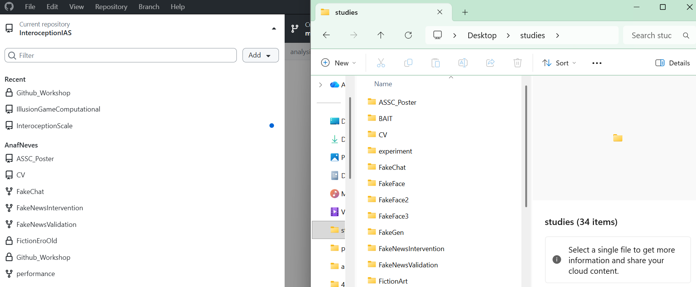
Top bar: repository, branch, Push / Pull
Changes: what you’ve edited
Bottom left: write a message, commit
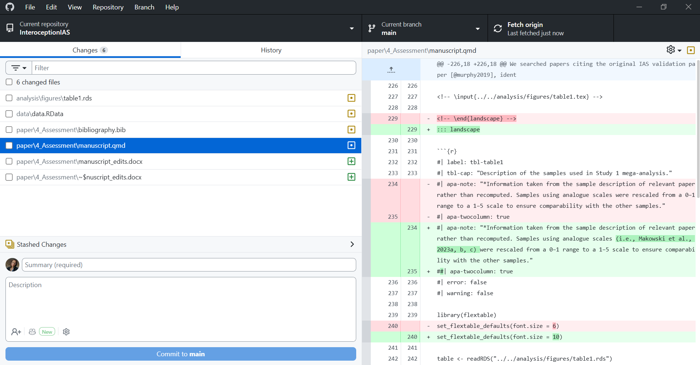
History: all past commits
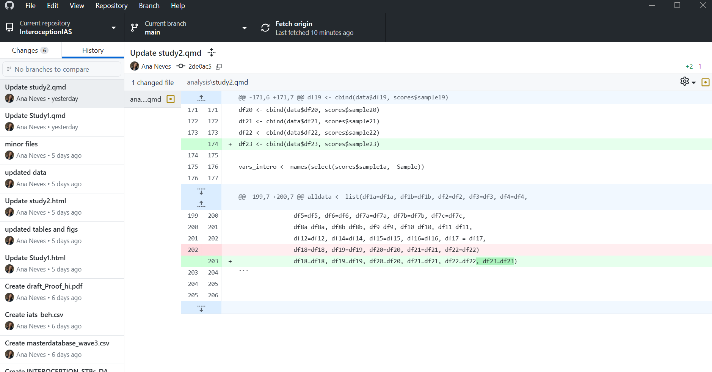
The workflow
The big picture
Tip
Commit little and often. Push at least at the end of every day.
1. Fork the repo
A fork is a copy of a repository under your account. Use it when you can’t edit the original.
On github.com, open the original repo and click Fork (top right)
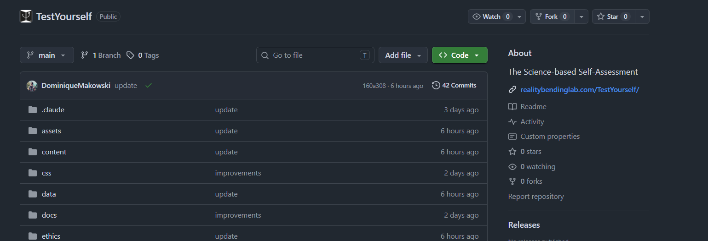
Keep the name and click Create fork
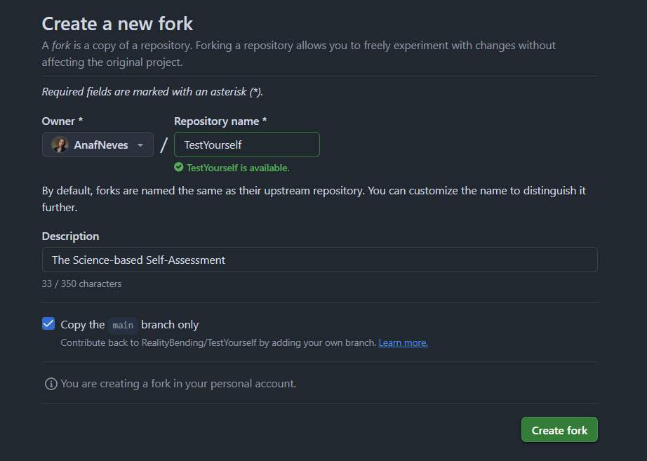
You now have your own copy: whatever you do there, the original stays untouched 🛡️
2. Clone your fork
In GitHub Desktop:
File or Add ➜ Clone repository
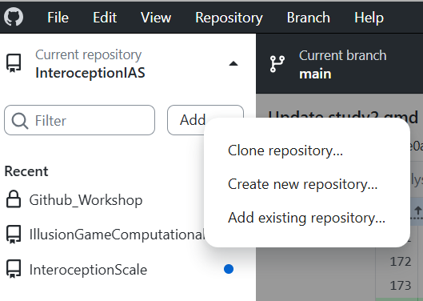
Choose the URL tab and paste your fork’s URL (it has your username)
Choose a Local path and click Clone
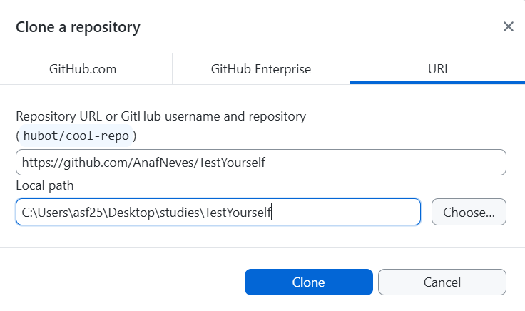
3. Commit your changes
Edit and save your files as usual
Check the Changes tab
Write a Summary
Click Commit to main
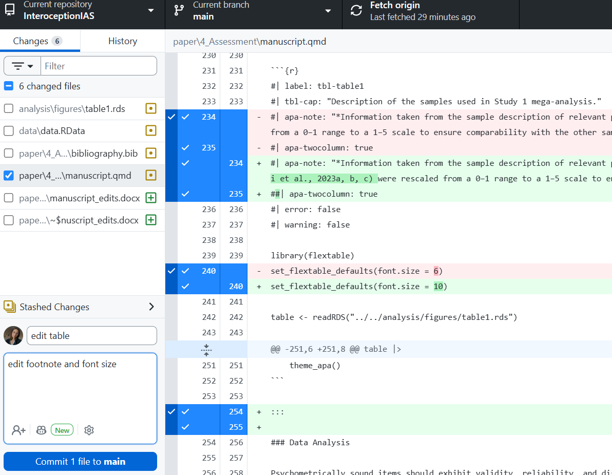
The button now says Push origin
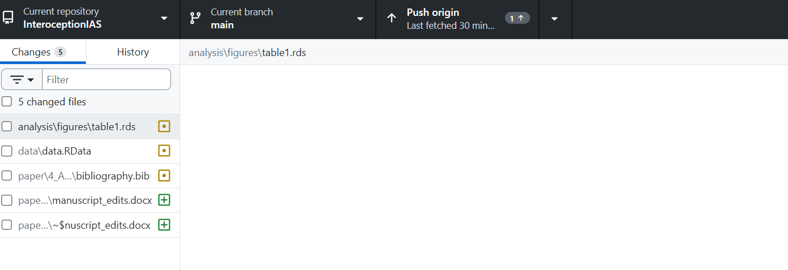
Good vs bad commit messages
❌ Bad
updatestuffasdfghfinal version
✅ Good
Add age to demographics tableFix typo in methods sectionRemove outliers above 3 SDUpdate figure 2 colours
Future you will thank you!
4. Push to your fork
Click Push origin
Refresh your fork on github.com: your changes are there 🎉
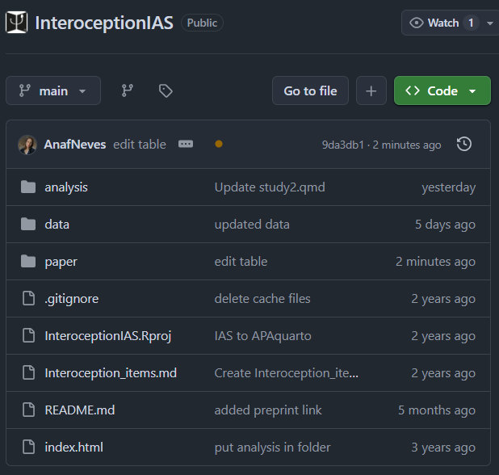
5. Open a pull request
A pull request (PR) asks the owner of the original repo to add your changes.
On github.com, go to your fork ➜ Pull requests ➜ New pull request
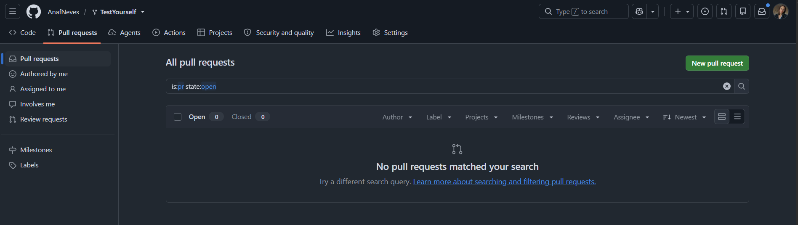
Check the arrow: base = the original ⬅ head = your fork, then click Create pull request
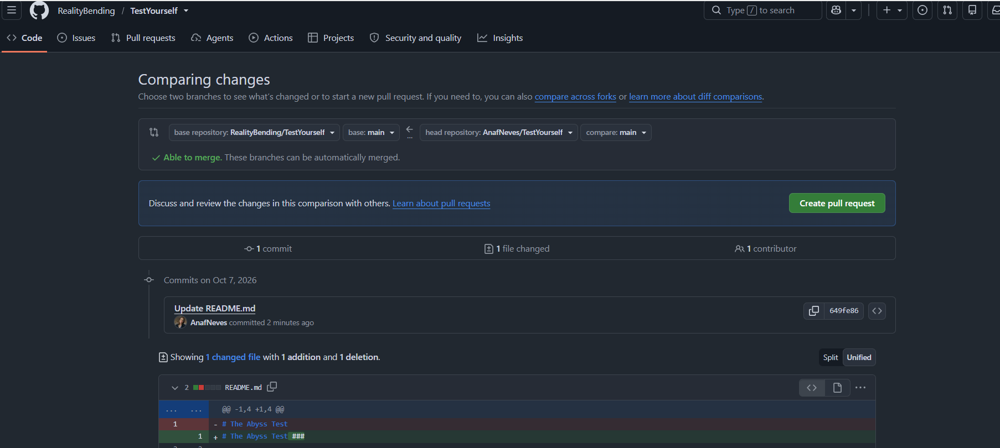
The owner reviews, comments 💬 and merges ✅
6. Keep your fork up to date
The original repo keeps changing. Before you start working:
On github.com, open your fork and click Sync fork ➜ Update branch
In GitHub Desktop, click Fetch origin
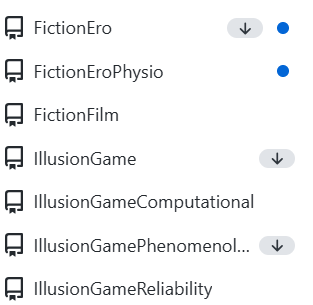
If there’s anything new, click Pull origin
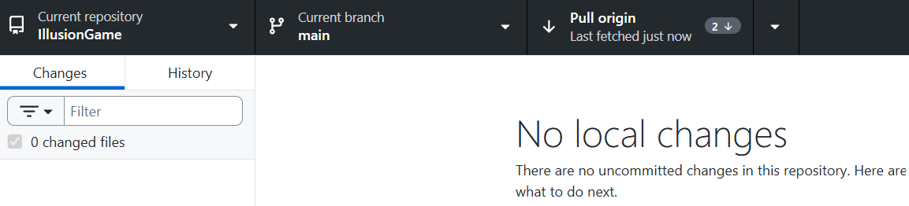
Files you shouldn’t share
Large data, outputs, passwords…
- In the Changes tab, right-click the file
- Choose Ignore file (or Ignore all .xxx files)
- GitHub Desktop writes a
.gitignorefile for you
Hands-on
Your turn: add a memory to the REBEL website
Fork the REBEL website repo
Clone your fork with GitHub Desktop
Open the image folder under the memories folder
Add an image from the dinner/pub from last Monday (follow the same naming specification)
Open the
memories_manifest.jsonfile and add the information about the image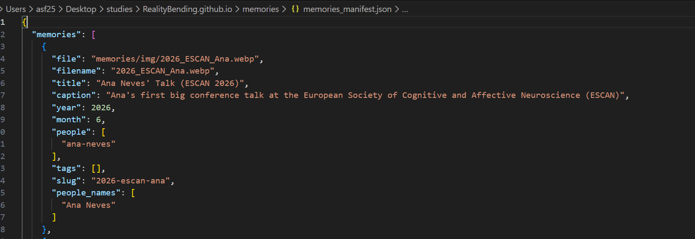
Commit with a good message and push to your fork
Open a pull request to
RealityBending/RealityBending.github.io🎉
Extras
Create your own repository
On github.com:
Click New
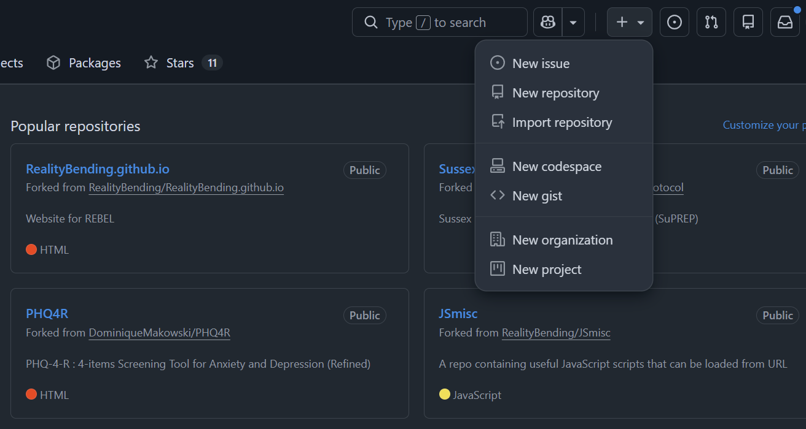
Give it a name
Tick Add a README file
Click Create repository
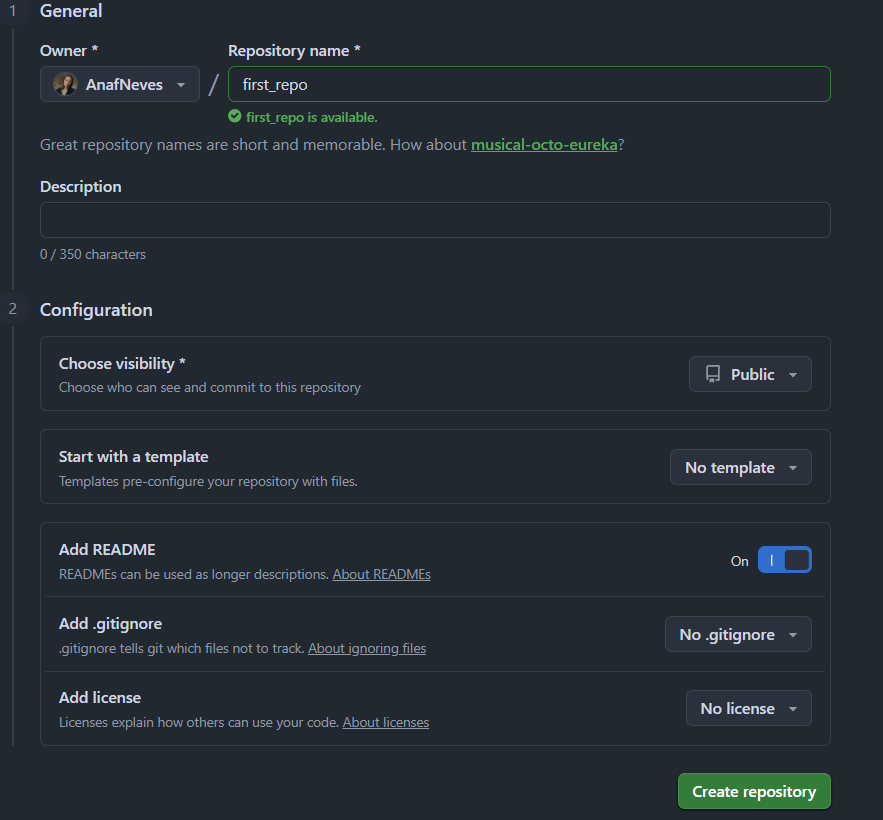
Then clone it, commit and push as usual: no fork needed, it’s yours!
Branch or fork?
| Branch | Fork | |
|---|---|---|
| Where | Inside the same repo | A separate copy on your account |
| Who | People with access to the repo | Anyone |
| When | Trying something in your own or your team’s project | Contributing to someone else’s project |
Branches: try things safely
- Current branch ➜ New branch, then Publish branch
mainstays safe while you experiment
Going back in time
| What happened | What to do in GitHub Desktop |
|---|---|
| Changed a file, not committed | Changes ➜ right-click file ➜ Discard changes |
| Committed, not pushed | History ➜ right-click commit ➜ Undo commit |
| Already pushed | History ➜ right-click commit ➜ Revert changes in commit ➜ Push |
| Just want to look at an old version | github.com ➜ open the file ➜ History |
Tip
Git never forgets: reverting adds a new snapshot that cancels the old one.
When things go wrong
| Problem | What to do |
|---|---|
| Push is rejected | Someone else pushed first: Pull, then Push again |
| Conflict (same lines changed by two people) | GitHub Desktop shows the files: pick which version to keep, then commit |
| Committed the wrong thing | History ➜ right-click the commit ➜ Revert changes in commit |
| File too big | Don’t commit it: Ignore it instead |
Resources
- GitHub Desktop documentation
- GitHub Docs
- GitHub Skills: free interactive courses
Questions?